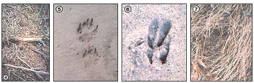

TOM BROWN JR.)
[4] Twigs worn by regular animal passage. . . [5] These fox prints show the pressure released caused by the animal's making a sharp turn . . . [6] Deer tracks, demonstrating the indirect register of the front and rear feet. [7] A rabbit lay . . . note the rough outline of the animal's body.